Manual de Uso — Administrador e Cliente
O AgroGest é uma aplicação web para um agricultor da província de Nampula gerir os seus fornecedores, o catálogo de produtos (sementes, fertilizantes, maquinaria e ferramentas), as campanhas agrícolas com os respetivos cultivos e colheitas, e a venda de produtos a clientes com emissão de factura.
No primeiro arranque o sistema já traz dados de demonstração realistas: 4 fornecedores, 15 produtos com fotografia (sementes de variedades cultivadas no norte de Moçambique, como o milho Matuba e o feijão nhemba IT-18, adubos, ferramentas e máquinas), 8 clientes, 10 vendas e 2 campanhas concluídas com cultivos e colheitas. Os nomes, contactos e endereços de fornecedores e clientes são fictícios.
| Perfil | Como obter acesso | O que pode fazer |
|---|---|---|
| Administrador | Conta fixa: admin@agro.mz / admin234 |
Gerir fornecedores, produtos, campanhas, cultivos e colheitas; consultar listagens, compras, relatórios; gravar o estado. |
| Cliente | Auto-registo em Criar conta. Contas de demonstração: ana@teste.mz, carlos@teste.mz, fatima@teste.mz e outras (ver README) / cliente123 |
Consultar o catálogo, gerir o carrinho, comprar, ver e imprimir as suas facturas. |
1.234,56 MT. Datas em dd/mm/aaaa.O AgroGest corre em qualquer computador com Java 17 ou superior, Apache Maven e Apache Tomcat 10.1.
Os passos são os mesmos nos três sistemas: instalar as ferramentas, configurar a porta 8081 no Tomcat, compilar o projeto,
copiar o ficheiro agrogest.war para a pasta webapps do Tomcat e arrancar.
Com Git: git clone https://github.com/raniimamade16/agrogest.git. Sem Git: no GitHub, botão Code → Download ZIP, e extrair.
agrogest-dados do Tomcat).dist/agrogest.war já vem pronto. Se não quiser instalar o Maven,
salte o passo de compilação e copie esse ficheiro em vez de target/agrogest.war.https://adoptium.net (ficheiro .msi).
No instalador, ative a opção Set JAVA_HOME variable. Ou, na Linha de Comandos:
winget install EclipseAdoptium.Temurin.17.JDK
apache-maven-3.9.x-bin.zip de https://maven.apache.org/download.cgi e extraia para
C:\apache-maven. Acrescente C:\apache-maven\bin à variável Path
(Definições → Sistema → Acerca de → Definições avançadas do sistema → Variáveis de ambiente).https://tomcat.apache.org/download-10.cgi e extraia para C:\tomcat.C:\tomcat\conf\server.xml no Bloco de Notas, procure port="8080" e mude para port="8081".java -version e mvn -v.cd C:\caminho\para\agrogest mvn clean package copy target\agrogest.war C:\tomcat\webapps\
C:\tomcat\bin\catalina.bat run (deixe a janela aberta).http://localhost:8081/agrogest/ no navegador.https://brew.sh.brew install maven tomcat@10
T=$(brew --prefix tomcat@10)/libexec sed -i '' 's/port="8080"/port="8081"/' $T/conf/server.xml
cd ~/caminho/para/agrogest mvn clean package cp target/agrogest.war $T/webapps/
$T/bin/catalina.sh run e abrir http://localhost:8081/agrogest/.T (linha T=... do passo 3).sudo apt update sudo apt install -y openjdk-17-jdk maven git curl
curl -L https://archive.apache.org/dist/tomcat/tomcat-10/v10.1.34/bin/apache-tomcat-10.1.34.tar.gz | tar xz -C ~ T=~/apache-tomcat-10.1.34 sed -i 's/port="8080"/port="8081"/' $T/conf/server.xml
cd ~/caminho/para/agrogest mvn clean package cp target/agrogest.war $T/webapps/
$T/bin/catalina.sh run e abrir http://localhost:8081/agrogest/. Parar: Ctrl+C./opt/tomcat, regista o serviço systemd e publica o WAR:
sudo ./deploy/instalar.sh dist/agrogest.war sudo systemctl start|stop|restart|status tomcat journalctl -u tomcat -f
Volte a correr mvn clean package e copie o novo agrogest.war para webapps. Com o Tomcat a correr,
a aplicação é republicada sozinha em poucos segundos e os dados são mantidos.
| Sintoma | Solução |
|---|---|
java ou mvn “não é reconhecido” | Abra um terminal novo depois de instalar. No Windows, confirme o Path e o JAVA_HOME. |
| Windows: “Neither the JAVA_HOME nor the JRE_HOME environment variable is defined” | Defina a variável com a pasta onde o JDK foi instalado e abra uma Linha de Comandos nova, por exemplo:setx JAVA_HOME "C:\Program Files\Eclipse Adoptium\jdk-17.0.13.11-hotspot" |
| “Address already in use” / porta 8081 ocupada | Já há um Tomcat a correr. Pare-o (Ctrl+C ou shutdown.sh / shutdown.bat) ou escolha outra porta em server.xml. |
Página 404 em /agrogest/ | Confirme que agrogest.war está em webapps e aguarde alguns segundos pelo deploy. Veja logs/catalina.*.log. |
| Aparece um aspeto ou dados antigos | Recarregue com Ctrl+Shift+R (Cmd+Shift+R no Mac). Para voltar aos dados de demonstração: Persistência → Eliminar ficheiro e reiniciar o Tomcat. |
| Erro de compilação “release 17 not supported” | O Maven está a usar um Java antigo. Instale o JDK 17+ e confirme com mvn -v. |
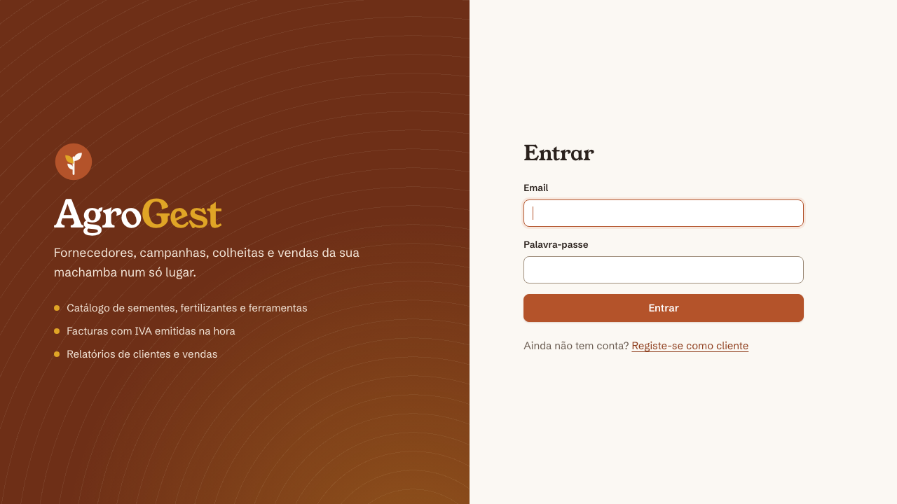
http://<servidor>:8081/agrogest/ no navegador./admin/… recebe a mensagem 403 — Acesso negado.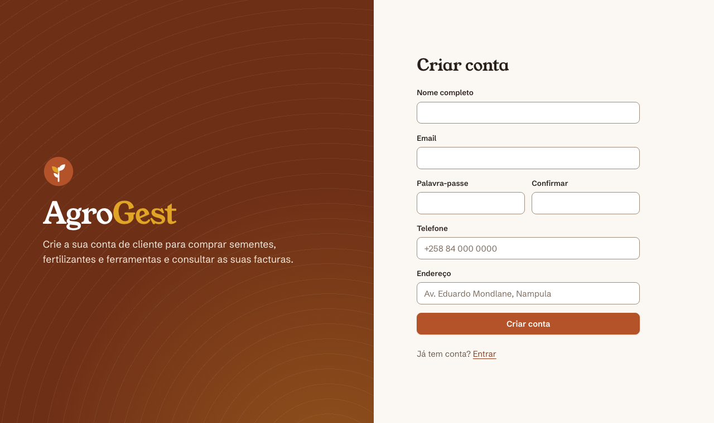
O email é único. Se já existir uma conta com esse email, o sistema avisa e mantém os dados preenchidos.
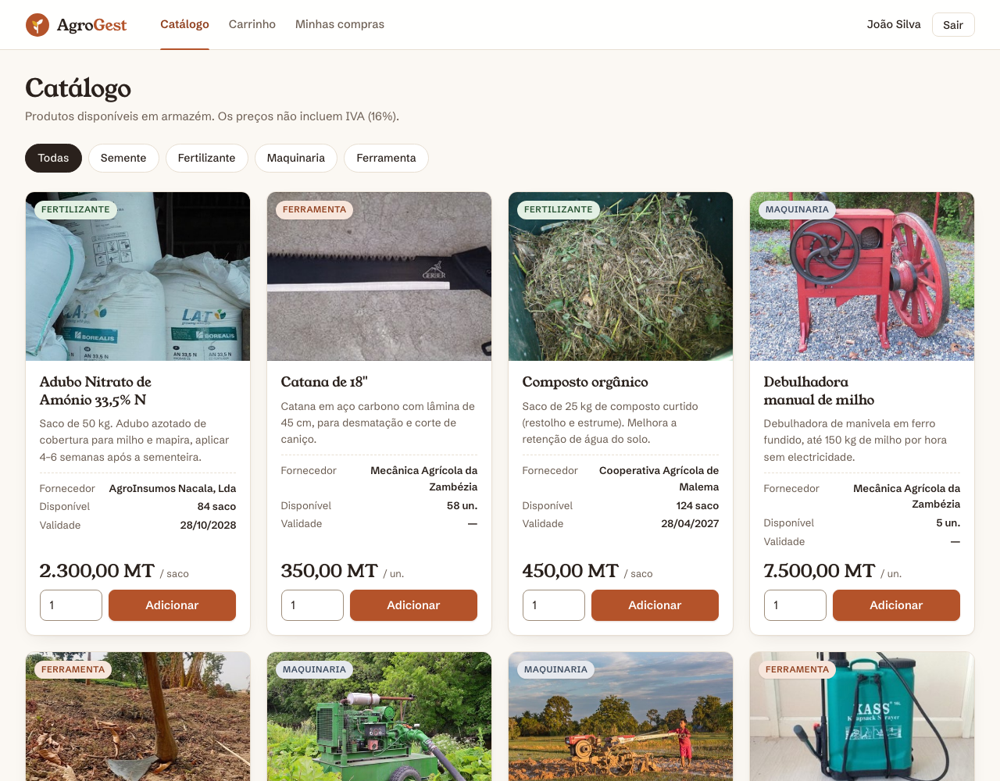
Cada produto mostra a fotografia, categoria, nome, descrição, fornecedor, quantidade disponível, validade e preço por unidade. Use os botões Todas / Semente / Fertilizante / Maquinaria / Ferramenta para filtrar. Só aparecem produtos com stock e dentro da validade.
Se pedir mais do que o stock disponível, o sistema recusa e indica quantas unidades existem.
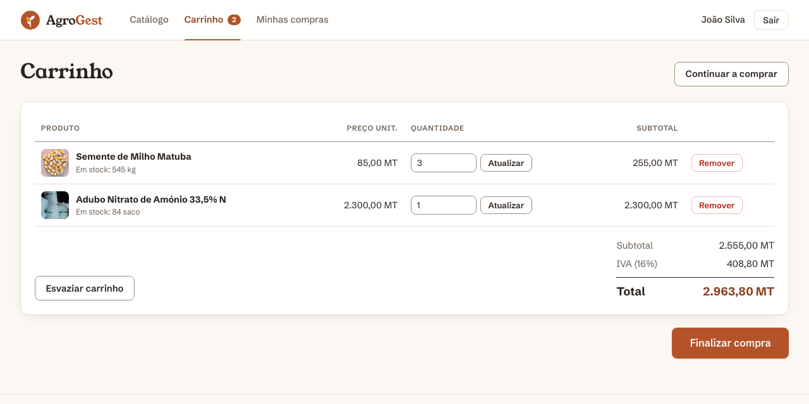
O carrinho fica guardado na sessão: pode voltar ao catálogo e continuar a comprar.
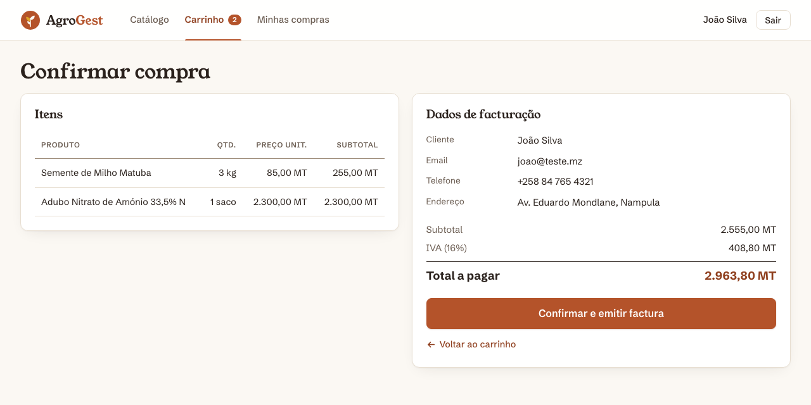
Ao confirmar, o sistema volta a verificar o stock de todos os produtos. Se algum ficou indisponível entretanto
(por exemplo, porque outro cliente comprou), a compra não é feita, o stock não é alterado
e aparece a lista de produtos em falta. Se tudo estiver disponível, o stock é descontado e a factura é emitida com número sequencial
(FT-2026-1, FT-2026-2, …).
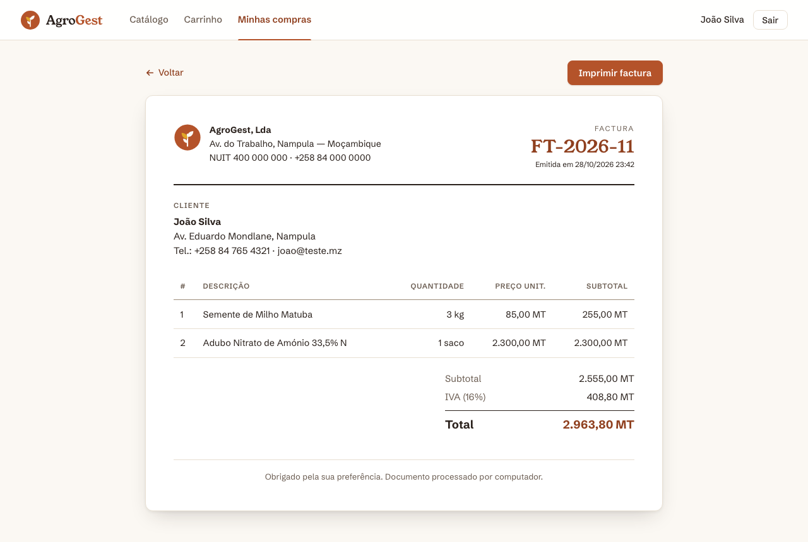
Clique em Imprimir factura (ou Ctrl+P). A impressão mostra só a factura, sem menus nem botões. Para gerar um PDF, escolha Guardar como PDF na janela de impressão.
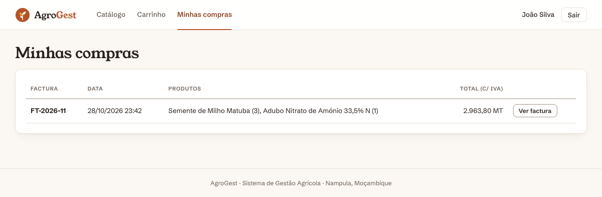
Em Minhas compras estão todas as compras anteriores, das mais recentes para as mais antigas. Ver factura abre a factura correspondente. Cada cliente só consegue ver as suas próprias facturas.
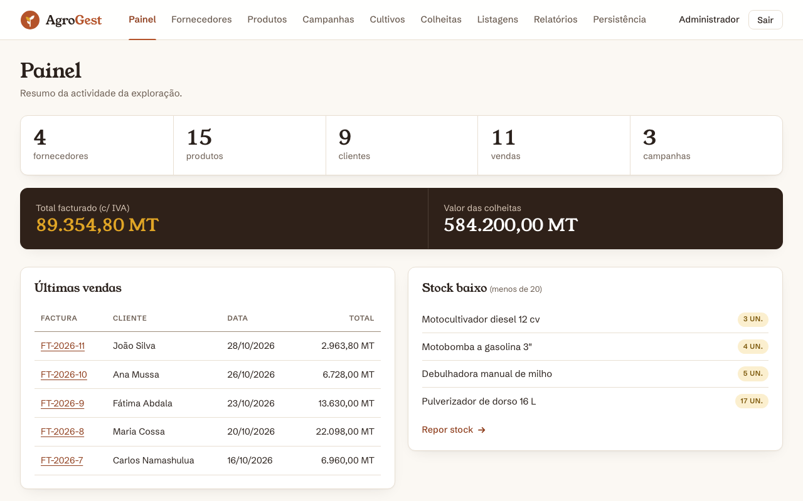
Mostra o número de fornecedores, produtos, clientes, vendas e campanhas (cada indicador é uma ligação para a área respetiva), o total facturado, o valor das colheitas, as últimas 5 vendas e os produtos com stock abaixo de 20 unidades.
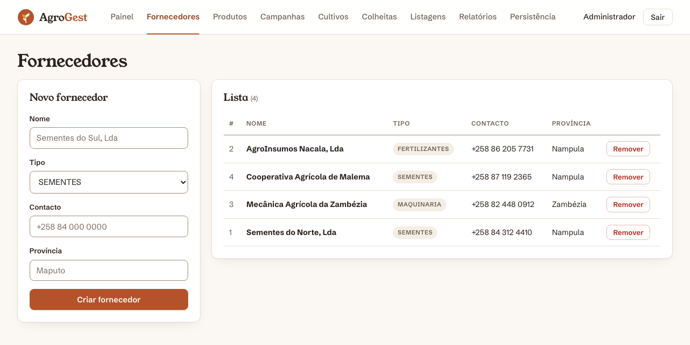
Um fornecedor com produtos associados não pode ser removido. Remova primeiro os produtos.
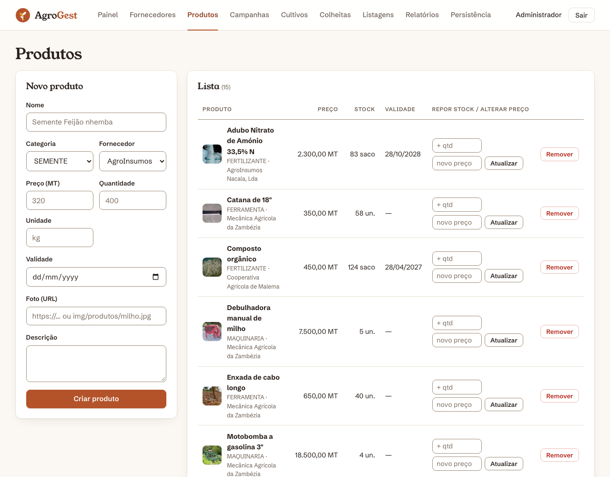
Os produtos fora da validade ficam assinalados a vermelho e deixam de aparecer no catálogo do cliente.
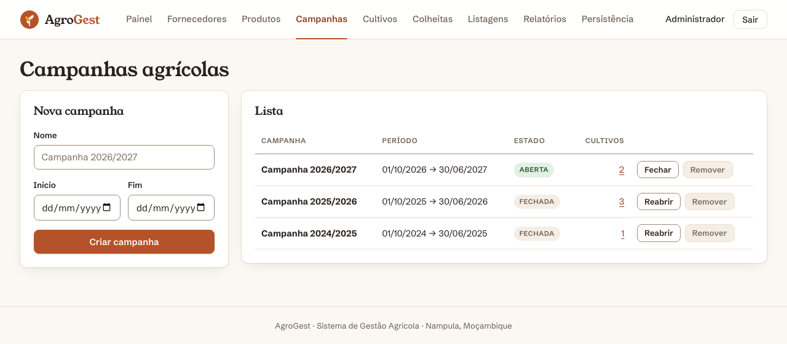
O botão Remover fica inativo enquanto a campanha tiver cultivos associados.
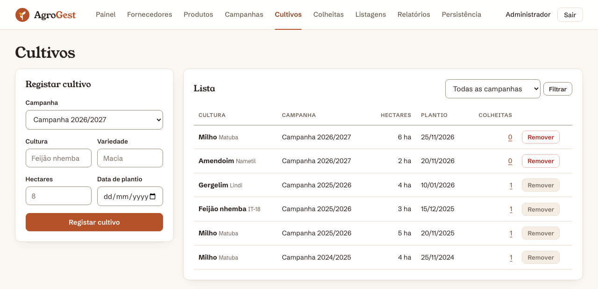
Um cultivo com colheitas registadas não pode ser removido.
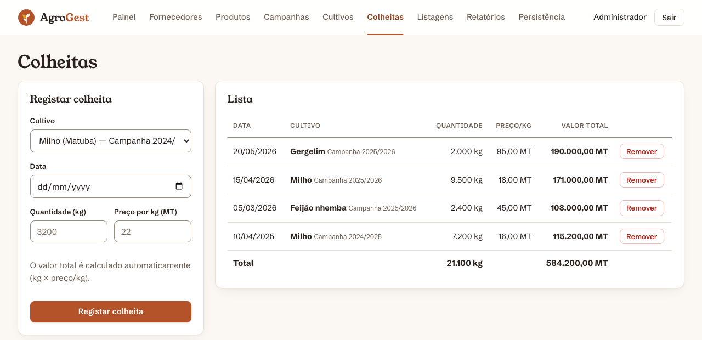
A data da colheita não pode ser anterior à data de plantio do cultivo.
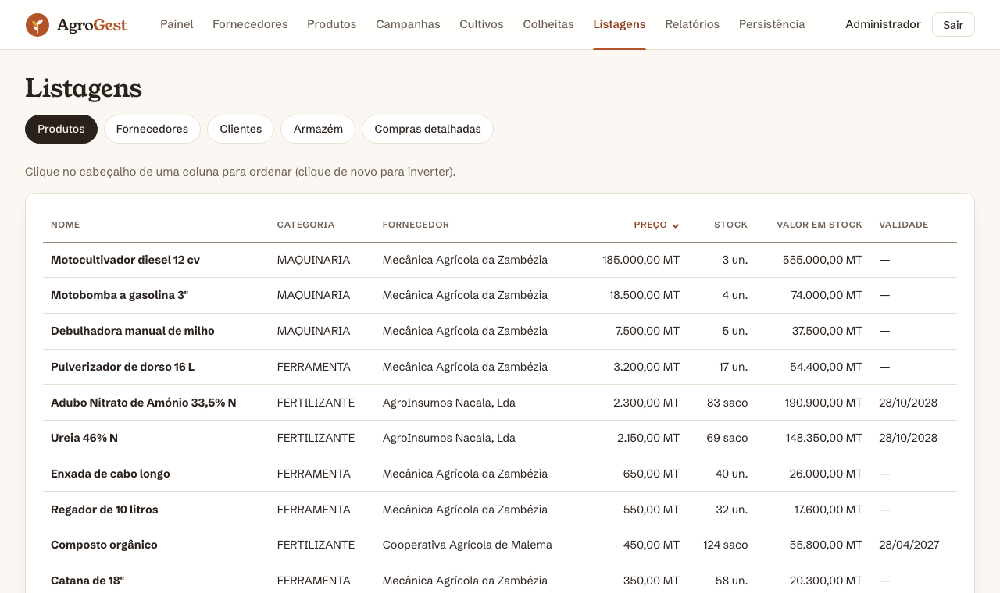
Menu Listagens, com os separadores Produtos, Fornecedores, Clientes, Armazém (só produtos com stock > 0 e o valor total em stock) e Compras detalhadas. Clique no título de uma coluna para ordenar (nome, preço, stock, data, valor). Um segundo clique inverte a ordem (▲ crescente, ▼ decrescente). Em Clientes pode também ativar/desativar contas.
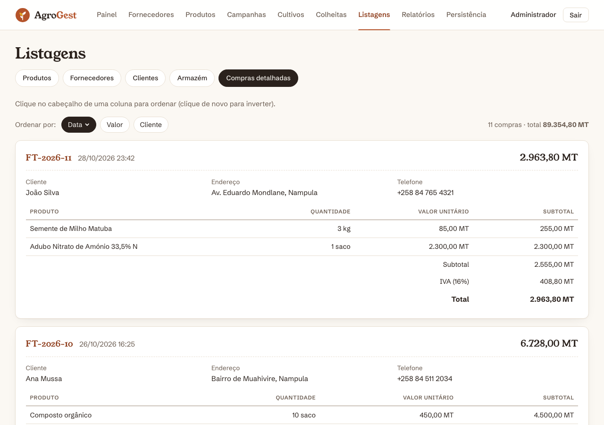
Cada compra mostra o cliente, o endereço, o telefone, os produtos, as quantidades, o valor unitário, o subtotal, o IVA, o total e a data. O número da factura é uma ligação para a factura imprimível. Pode ordenar por data, valor ou cliente.
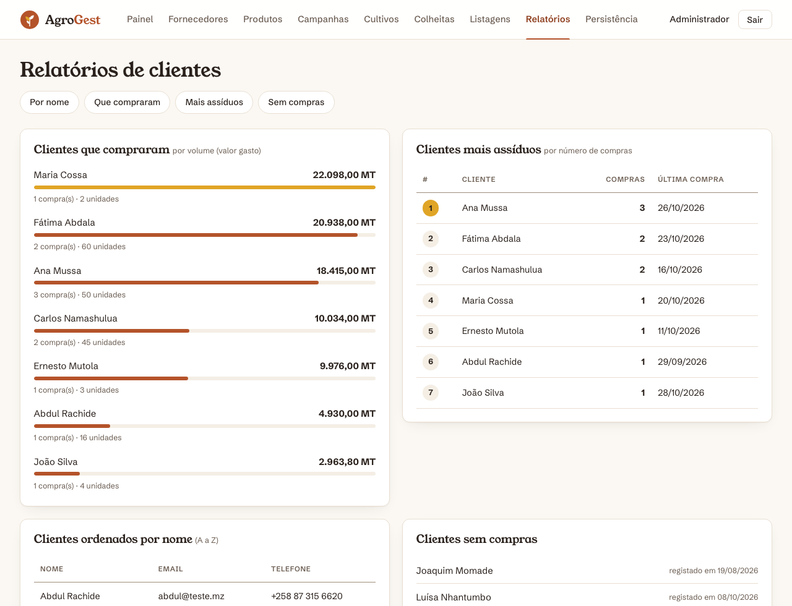
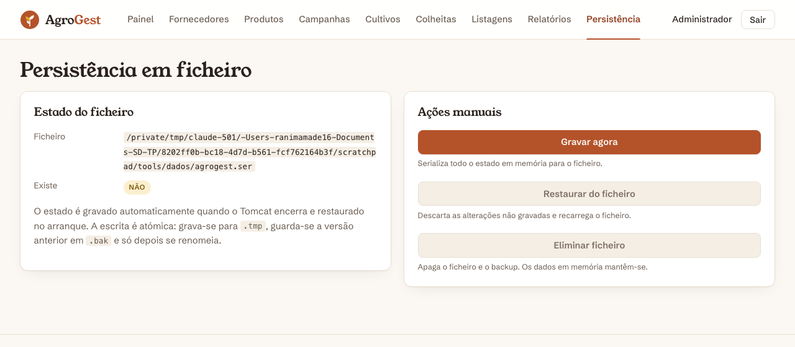
O estado é gravado automaticamente quando o Tomcat é encerrado e restaurado quando volta a arrancar. Neste menu também pode:
agrogest.ser.| Mensagem | Significado / o que fazer |
|---|---|
| Email ou palavra-passe incorretos | Verifique os dados. As palavras-passe distinguem maiúsculas de minúsculas. |
| Conta desativada | O administrador desativou a conta em Listagens → Clientes. |
| Já existe uma conta com o email … | Use outro email ou entre com a conta existente. |
| Indisponível: só há N … em stock | Reduza a quantidade pedida. |
| Compra não efetuada: produtos indisponíveis | Outro cliente comprou entretanto. Ajuste o carrinho; nada foi cobrado nem descontado. |
| Não é possível remover … associado(s) | Remova primeiro os registos dependentes (cultivos, colheitas ou produtos). |
| A campanha … está fechada | Reabra a campanha antes de registar cultivos. |
| 403 — Acesso negado | A página é reservada a outro perfil (ex.: cliente em /admin, ou factura de outro cliente). |